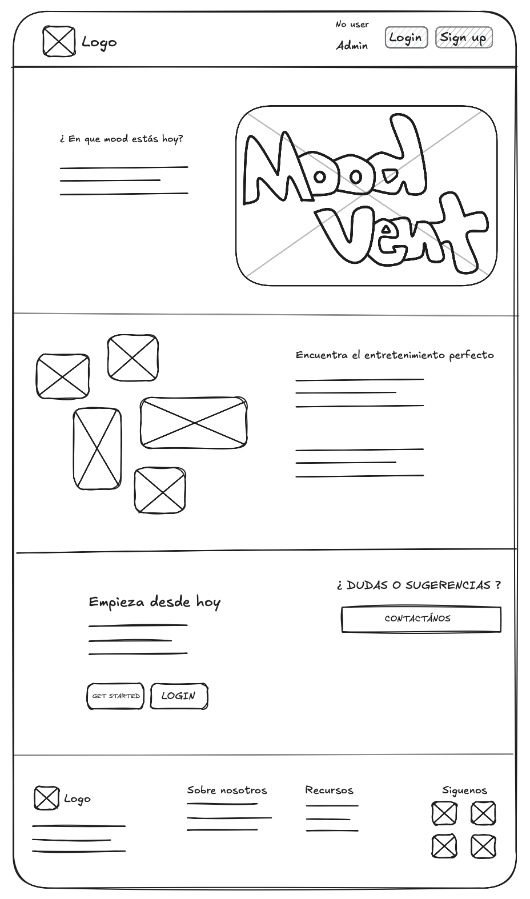
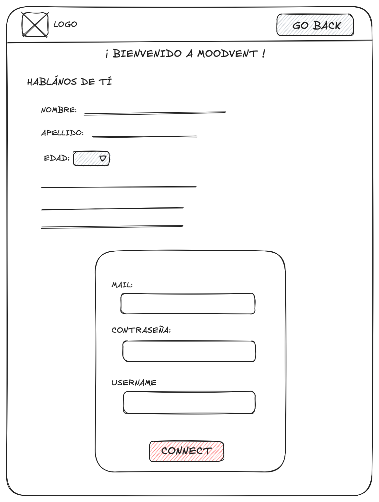
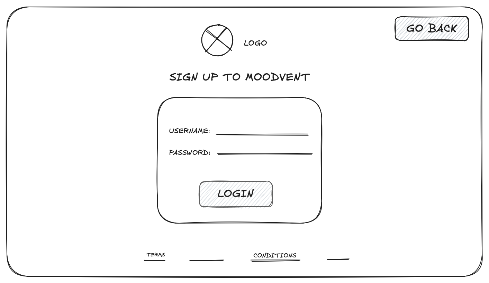
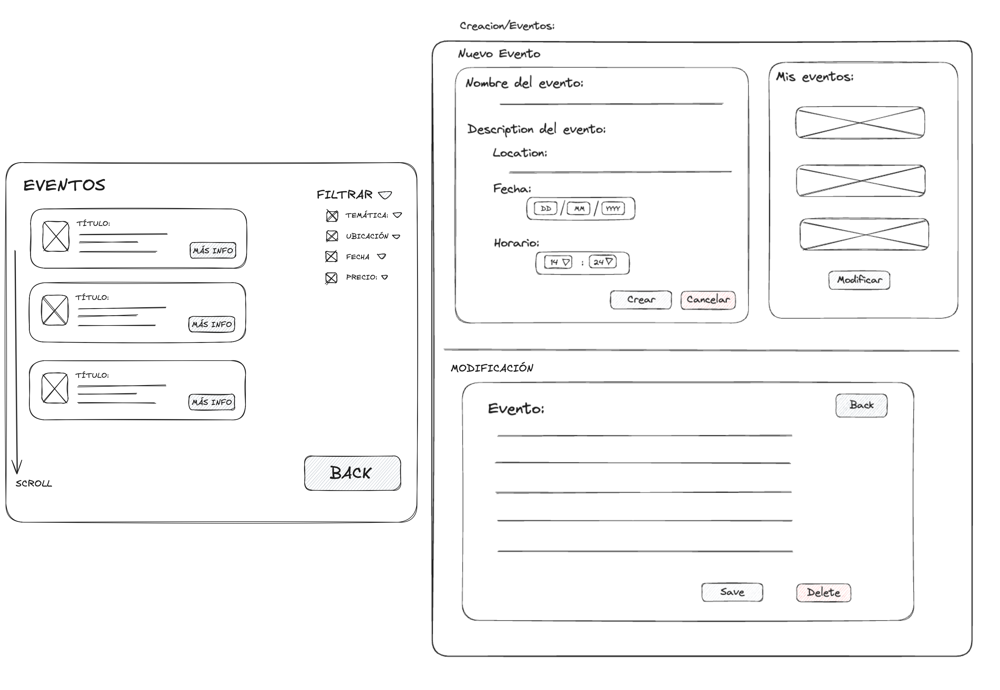
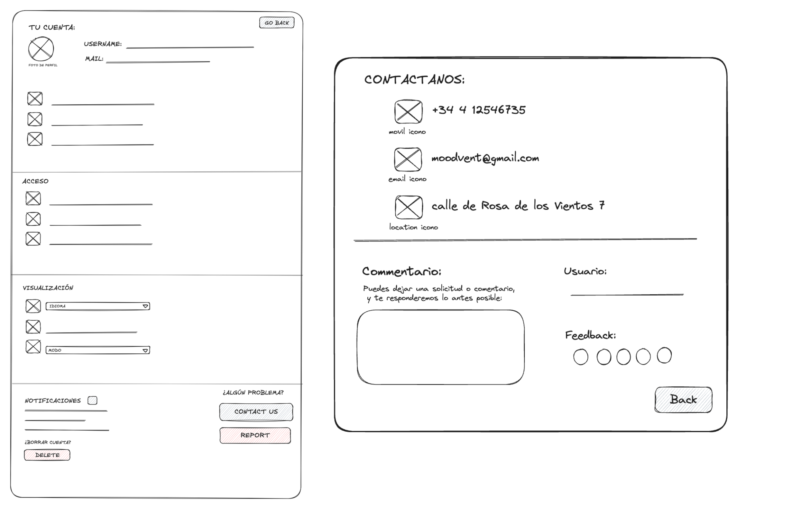
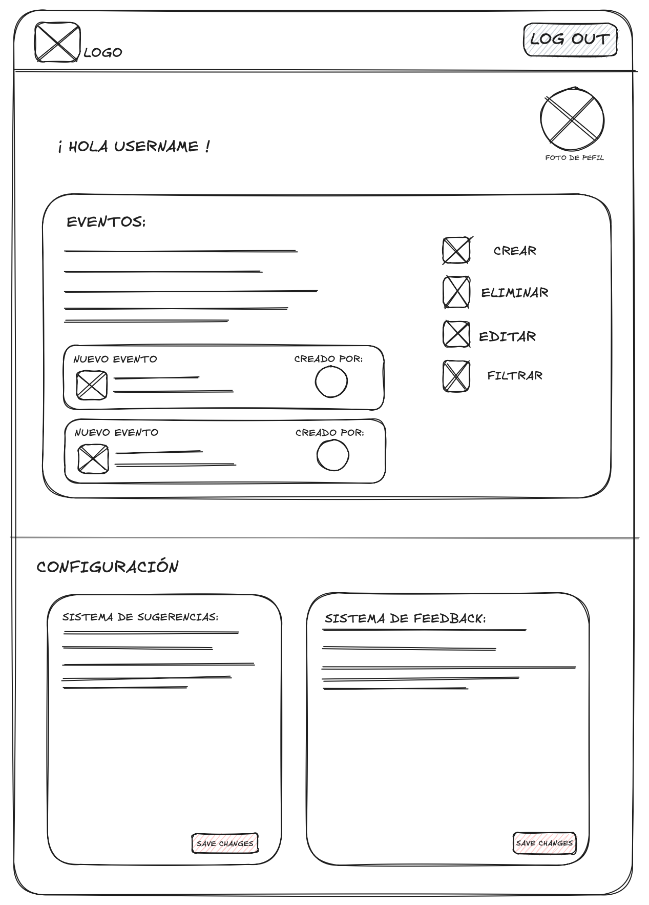

En la pantalla inicial de la aplicación web, se encuentran las diferentes opciones de acceso para el usuario (usuario con cuenta existente "login" , no registrado "no user", opción para crear una cuenta "sign up" ).
Adicialmente tendrá un botón para acceder a la pantalla de contacto.
Al elegir la opción de crear una nueva cuenta, el usuario será redirigido a la sección de registro, Esta sección consiste de un formulario que el usuario deberá completar con su información personal: nombre, apellido, edad, etc. Adicionalmente, deberá ingresar un nomhre de usuario y contraseña para completar el proceso de creación de su cuenta.
Usuarios que ya tengan una cuenta registrada en la aplicación, serán redirigidos a está sección, donde podrán iniciar sesión ingresando se encuentra la opción de iniciar sesión al ingresar el nombre de usuario y contraseña
Una vez el usuario haya creado su cuenta o haya iniciado sesión, tendrá acceso al panel de usuario, donde se encuentra toda la información personal.
Por una parte, habrá una gráfica representando los diferentes estados emocionales del usuario a lo largo del tiempo en el uso de la aplicación. Ádemas, contará con un historial donde podrá observar el registro de sus respuestas previas.
Adicionalmente, tiene una pestaña con acceso a las demás secciones de la aplicación. Estan incluyen acceso al formulario diario de selección del estado de ánimo, una sección de sugerencias favoritas, una pestaña con todos los eventos creados por el usuario, un diario (journal) para escribir pensamientos, una pestaña de configuración y finalmente, la opción de cerrar sesión.

En esta pestaña el usuario puedo registrar sus emociones eligiendo el ícono que mejor represente su esado emocional actual. De manera opcional, se incluye un apartado de diario (journal) donde el usuario puede añadir una descripción más extensa de sus pensamientos y emociones.
Los nuevos usuarios y los registrados acceden a está pestaña por medio del panel del usuario. Por otra parte, los usuarios que escogan la opción de "no registrado" en la pantalla de inicio serán redirigidos a esta sección.

En la parte superior de la página incluye íconos que permiten al usuario filtrar las sugerencias según su categoría. Adicionalmente, tiene la opción de "refresh" para generar nuevas sugerencias. Cada sugerencia tiene el formato específico y el usuario puede desplazarse en la página para ver más sugerencias.
Se accede a está sección desde cada sugerencia. Aquí se muestra una breve descripción de la sugerencia y un sector para que el usuario escriba sus comentarios. Ádemas, cuenta con la opción de añadir la sugerencia a los favoritos. Los usuarios no registrados no tienen acceso a la sección de Feedback.

En esta sección, el usuario podrá acceder a todos los eventos disponibles en la aplicación. Los eventos pueden filtrarse por preferencias como temática, ubicación, fecha y precio. Similar a las sugerencias, el usuario puede desplazarse en la página para ver más eventos. La opción de creación de eventos esá disponible solo para usuarios registrados.
Se trata de uhn formulario donde el usuario puede ingresar toda la información relevante del evento. Incluye una pestaña para visualizar los eventos previamente creados por el usuario y un botón para modificarlos
Sección para cambiar, eliminar e incluir información de un evento existente.Solo el usuario que creo el evento y el administrador tienen permitido modificarlo.
Pestaña que le da opción al usuario de contactase con el administrador por medio telefónico o correo. Tambien, tiene la opcion de añadir comentarios generales de la aplicación y dar una puntuación a la página web. Esta sección se accede en la pantalla inicial y en la configuración.
Aquí el usuario puede ver y modificar su información personal (Foto de perfil, nombre de usuario, mail,etc). También puede ajustar sus preferencias de visualización, como idioma, tema, notificaciones. En esta pestaña, el usuario tambien puede reportar algún problema o eliminar su cuenta. Solo los usuarios registrados pueden acceder a esta sección, ya qye se encuentra dentro del panel de usuario
La pestaña del administrador se divide en dos secciones: una para la gestión de eventos, donde puede crear, eliminar o editar los eventos subidos por los usuarios, y otra para la configuración del sistema de sugerencias y feedback, donde puede realizar los ajustes para el correct funcionamiento de la aplicación.
